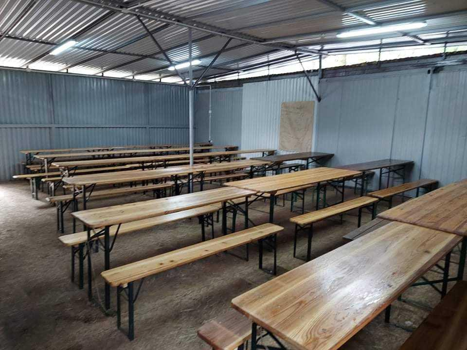
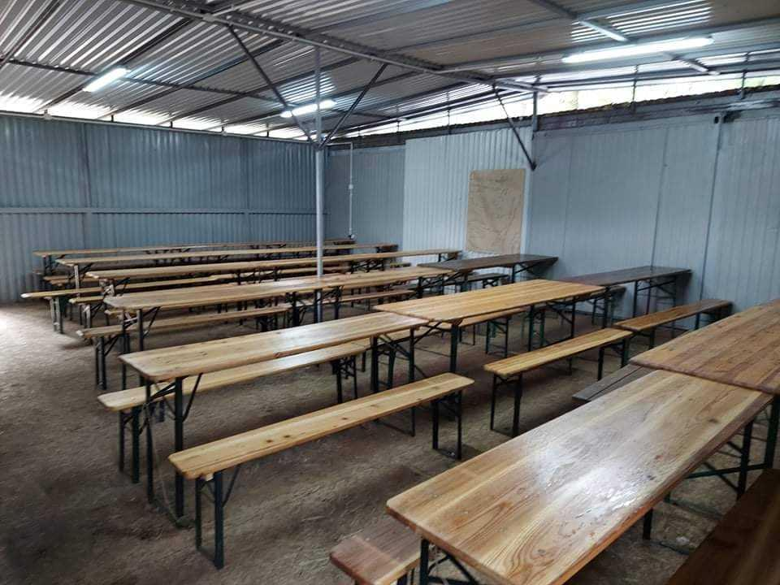

Baza obozowa Hufca ZHP Powiatu Trzebnickiego w Lginiu
Poznaj ofertę najlepszej bazy harcerskiej w Polsce!
Poznaj ofertę najlepszej bazy harcerskiej w Polsce!
Szukasz idealnego miejsca, aby zorganizować obóz drużyny, szczepu czy hufca? Chcesz zapewnić swoim harcerzom bezpieczną zabawę i niezapomniane przeżycia? Zależy Ci na znalezieniu miejsca, które pozwoli na różnorodność realizowanego programu? Baza obozowa Hufca Powiatu Trzebnickiego jest dla Ciebie idealnym miejscem!
Nasz personel gospodarczo-medyczny czuwa 24h na dobę dbając o najwyższy standard wypoczynku dla naszych gości. Dysponujemy 450 miejscami obozowymi, z możliwością stworzenia 8 mniejszych, niezależnych podobozów, a największym atutem naszej bazy jest malownicze położenie nad jeziorem.
Baza zlokalizowana jest w lesie na terenie Przemęckiego Parku Krajobrazowego, w miejscowości Lgiń, gmina Wschowa, województwo lubuskie. Więcej informacji o naszej lokalizacji i okolicy uzyskasz w sekcji okolica.
Gwarantujemy, że jeśli spędzisz z nami swój obóz - będziesz chciał tu wrócić!
Nasza lokalizacja rozciąga się w malowniczym otoczeniu jeziora Lgińsko, a miejscowości które warto odwiedzić w okolicy to: Wolsztyn, Sława i Wschowa. Baza, poza wspomnianym jeziorem, oferuje ponad 2 hektary terenu leśnego, w którym można przeprowadzić różnorodne zajęcia zarówno dla zuchów, jak i harcerzy! W naszych lasach można organizować gry nocne, gry terenowe oraz zajęcia tematyczne, które z pewnością dostarczą wielu niezapomnianych wrażeń!

Na terenie bazy mamy do dyspozycji harcerzy rowery wraz ze sprzętem gotowe do jazdy po okolicy. Baza jest też w posiadaniu 12 kajaków, którymi warto wypłynąć na jezioro by zaznać ciszy i spokoju podziwiając piękno otaczającej przyrody. Oprócz tego baza oferuje 3 miejsca ogniskowe idealnie nadające się na wieczory z gitarą lub ogniska obrzędowe.
Od 2021 roku na terenie bazy prowadzone są prace modernizacyjne. W 2023 roku wydzielono i przygotowano nową plażę do użytku dla harcerzy i kadr podobozów. Oczywiście podczas kąpieli nad bezpieczeństwem zuchów i harcerzy czuwa wykwalifikowany ratownik. Kąpielisko podzielone jest na 2 strefy odpowiadające umiejętościom pływania uczestników kąpieli. Pierwsza strefa wydzielona jest do 1.2 m, a druga do 3 m.

Uczestnicy śpią na kanadyjkach w namiotach typu NS, niska i wysoka "10". Dla kadry instruktorskiej przeznaczone są namioty typu "6", zwane inaczej sułtanką. Dysponujemy 450 miejscami obozowymi, z możliwością stworzenia 8 mniejszych, niezależnych podobozów. Na bazie istnieje możliwość budowania bram do podobozów oraz pryczy z drewna dostęnego na terenie obozu.
W celu zapewnienia najlepszej opieki medycznej na bazie znajduje się ambulatorium z 24 h opieką pielęgniarki. W zależności od ilości uczestników, liczba personelu jest zwiększana. W odległości 9 km od bazy znajduje się przychodnia zdrowia oraz szpital.
Wyżywienie na naszej bazie obejmuje 4 posiłki: śniadanie, obiad, podwieczorek i kolację. Do spożywania posiłków przeznaczony jest nowy budynek stówki o powierzchni 62,5 m², namiot stołówkowy o powierzchni 50,0 m² oraz minimum 10 kompletów stołów na zewnątrz budynku. W przypadku osób ze specjalną dietą i wymaganiami m.in. wegan, wegetarian, osób z alergiami pokarmowymi, przygotowujemy dodatkowy jadłospis dostosowany do ich potrzeb.
Na terenie bazy znajdują się budynki:
Dodatkowo każdy uczestnik ma stały dostęp do umywalni oraz wydzielonej umywalni do menażek, kubków i sztućców przy stołówce. Na terenie bazy jest ogólny dostęp do środków dezynfekcyjnych m. in. przy wejściu na stołówki, łaźnie, umywalnie, toalety, kuchnie.
 


Poniżej znajduje się link do broszury, która dostarcza dodatkowych informacji: Link do pobrania broszury.
Poniżej przedstawiamy mapę naszej bazy:

1 opiekun na 15 osób oraz komendant zgrupowania gratis.
Aby uzyskać aktualne inforamcje o terminach, najlepiej skontaktować się z nami w sekcji kontakt.
W przypadku podjęcia decyzji o spędzeniu obozu na naszej bazie, należy podpisać porozumienie, w którym zostanie określony termin wpłacenia zaliczki.
*podatek VAT (8%) nie jest wliczany dla jednostek z ZHP Chorągwi Dolnośląskiej. W przypadku specjalnych diet do powyższej ceny doliczane jest 10,00 zł.
W razie jakichkolwiek pytań odnośnie cen lub terminów otwarcia bazy, prosimy o przejście do sekcji kontakt w celu uzyskania większej ilości informacji.